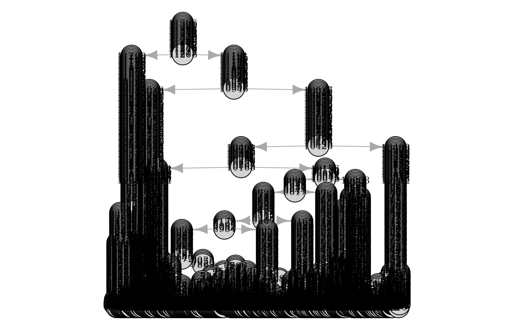
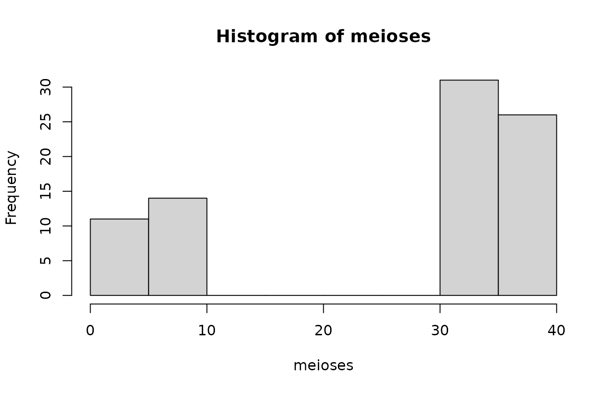
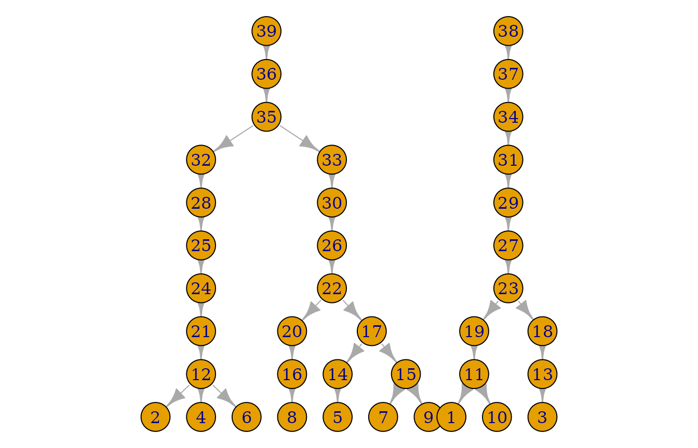

Introduction
Mikkel Meyer Andersen
26 april, 2019
introduction.RmdFirst, the library is loaded:
For reproducibility, the seed for the (pseudo) random number generator is set:
Population simulation
A standard Wright-Fisher population can be simulated (hiding progress information) as follows:
Building the pedigrees
Until pedigrees are built/inferred, there is not much information available (e.g. about children). So let us infer the pedigrees:
## List of 2 pedigrees (of size 38, 10)## [1] 2## 10 38
## 1 1## [1] 38## [1] 10The pedigrees can be plotted all at once:
Or just one at a time:

Some information about the population can be obtained. For example, the individuals in the final generation can be saved:
## List of 7
## $ population :Classes 'malan_population', 'externalptr' <externalptr>
## $ generations : num 10
## $ founders : int 2
## $ growth_type : chr "ConstantPopulationSize"
## $ sdo_type : chr "StandardWF"
## $ end_generation_individuals:List of 10
## $ individuals_generations :List of 23
## - attr(*, "class")= chr [1:2] "malan_simulation" "list"And a live individual is printed:
## pid = 1 with father pid = 11 and no childrenWe can also print another individual (from the entire population):
## pid = 22 with father pid = 28 and children (n = 2):
## pid = 16 with father pid = 28 and 2 children
## pid = 14 with father pid = 28 and 2 childrenRun a mutation process
set.seed(1)
mutrts <- c(0.5, 0.5)
pedigrees_all_populate_haplotypes(pedigrees = pedigrees,
loci = length(mutrts),
mutation_rates = mutrts, progress = FALSE)Individual pedigrees can now be plotted with haplotype information:

And the individual id can be removed to only display the haplotype:

And one or more individuals can be marked/highlighted:

More than 1 full generation
By standard, only the last generation contains \(N\) individuals. If the 3 last generations should be full, this can be done by specifying generations_full = 3 as follows:
set.seed(1)
sim_res <- sample_geneology(population_size = 10,
generations = 5,
generations_full = 3,
progress = FALSE)
pedigrees <- build_pedigrees(sim_res$population, progress = FALSE)
plot(pedigrees)
And to obtain the complete history, generations_full is set to generations:
set.seed(1)
sim_res <- sample_geneology(population_size = 10,
generations = 5,
generations_full = 5,
progress = FALSE)
pedigrees <- build_pedigrees(sim_res$population, progress = FALSE)
plot(pedigrees)
Now, there are 10 individuals in all generations.
Simulate to one founder
By standard, the number of generations are specified. Instead, it can be specified to continue simulating until one common founder is reached by specifying generations = -1:
set.seed(1)
sim_res <- sample_geneology(population_size = 10,
generations = -1,
progress = FALSE)
pedigrees <- build_pedigrees(sim_res$population, progress = FALSE)
plot(pedigrees)
The number of generations needed can be obtained as follows:
## [1] 15Counting matches
Simulating the population
Let’s try to simulate a larger population with 3 full generations (the additional generations_return is to get all individuals in the last 3 generations returned in the individuals_generations slot, cf. below):
set.seed(1)
sim_res <- sample_geneology(population_size = 1e3,
generations = 200,
generations_full = 3,
generations_return = 3, # default value
progress = FALSE)And build the pedigrees:
## 2565 2740 407 2464 1421 758 311 736
## 1 1 1 1 1 1 1 1## [1] 8So there are 8 pedigrees. Let’s try to plot the largest one:
ped_sizes <- sapply(1L:pedigrees_count(pedigrees), function(i) pedigree_size(pedigrees[[i]]))
ped_sizes## [1] 2740 2565 2464 1421 758 736 407 311
And the impose mutations from a 20 locus haplotype with mutation rate 0.001 per locus:
set.seed(10)
mutrts <- rep(0.001, 20)
pedigrees_all_populate_haplotypes(pedigrees = pedigrees,
loci = length(mutrts),
mutation_rates = mutrts, progress = FALSE)The haplotypes at the live individuals (3 generations) can be inspected:
## [1] 3000## [,1] [,2] [,3] [,4] [,5] [,6] [,7] [,8] [,9] [,10] [,11] [,12] [,13]
## [1,] 0 0 0 0 -1 -1 0 0 0 1 1 0 0
## [2,] 0 0 0 0 -1 0 0 0 -1 0 -1 0 0
## [3,] 0 0 0 0 0 0 0 0 0 0 0 0 0
## [4,] 0 0 0 0 0 0 0 0 0 0 0 1 0
## [5,] 0 0 0 0 0 0 0 0 0 0 0 0 0
## [6,] 0 -1 0 -1 0 0 0 0 -1 0 0 1 0
## [,14] [,15] [,16] [,17] [,18] [,19] [,20]
## [1,] 0 0 0 0 0 0 0
## [2,] 0 0 0 0 0 0 0
## [3,] 0 0 0 0 0 0 0
## [4,] 0 0 0 0 0 0 0
## [5,] 2 0 0 0 0 0 -1
## [6,] 0 1 0 0 0 0 0Lets look at the spectrum:
haps_str <- apply(haps, 1, paste0, collapse = ";")
haps_tab <- table(haps_str)
sort(haps_tab, decreasing = TRUE)[1:10]## haps_str
## 0;0;-1;0;0;0;0;0;0;0;0;0;0;0;-1;0;0;0;0;0
## 215
## 0;0;0;0;-1;0;0;0;0;1;1;0;0;0;0;0;0;0;0;0
## 164
## 0;0;-1;0;0;0;0;0;0;-1;-1;0;0;0;0;-1;0;0;0;0
## 152
## 1;1;0;0;0;0;0;0;0;1;0;0;0;-1;0;0;0;0;0;0
## 126
## 0;0;0;0;0;0;0;0;0;0;0;0;0;0;0;0;0;0;0;0
## 112
## 0;0;0;0;0;0;0;0;0;0;0;1;0;0;0;0;0;0;0;0
## 111
## 0;0;0;0;0;0;0;0;0;0;0;0;0;2;0;0;0;0;0;-1
## 92
## 0;0;0;0;0;0;0;-1;0;-2;0;0;0;0;0;0;0;0;0;0
## 90
## 0;0;0;0;-1;0;0;0;-1;0;-1;0;0;0;0;0;0;0;0;0
## 82
## 0;0;0;0;0;0;0;0;-1;0;0;0;0;0;-1;0;0;0;0;0
## 80## haps_tab
## 1 2 3 4 5 6 7 8 9 10 11 12 13 14 15 16 17 18
## 37 19 9 13 11 3 2 5 3 3 2 3 2 6 1 2 2 4
## 19 20 21 22 23 24 29 30 32 33 35 40 41 42 43 46 52 54
## 1 1 2 4 1 1 3 1 1 2 1 2 1 2 1 1 1 1
## 58 59 60 74 80 82 90 92 111 112 126 152 164 215
## 1 1 1 1 1 1 1 1 1 1 1 1 1 1Drawing an individual and counting matches
set.seed(100)
Q_index <- sample.int(n = length(live_individuals), size = 1)
Q <- live_individuals[[Q_index]]
Q_hap <- get_haplotype(Q)
Q_hap## [1] 0 0 0 0 0 0 0 0 0 0 0 0 0 0 0 0 0 0 0 0First, identify \(Q\)’s pedigree:
Now, count matches in pedigree and in live population:
count_haplotype_occurrences_pedigree(pedigree = Q_ped, haplotype = Q_hap, generation_upper_bound_in_result = 2)## [1] 46## [1] 112We can also inspect pedigree matches information about number of meioses and \(L_1\) distances:
path_details <- pedigree_haplotype_matches_in_pedigree_meiosis_L1_dists(suspect = Q,
generation_upper_bound_in_result = 2)## [1] 46## meioses max_L1 pid
## [1,] 164 1 2269
## [2,] 165 1 1468
## [3,] 166 1 625
## [4,] 165 1 1310
## [5,] 166 1 382
## [6,] 2 0 2040Look at the distribution of number of meioses between \(Q\) and the matches (there are 0 meioses between Q and himself):

On the path between \(Q\) and the match, the maximum \(L_1\) difference between \(Q\)’s haplotype and the haplotypes of the individuals on the path is recorded (0 means that that no mutations have occured on the path between \(Q\) and the match):
## L1_max
## 0 1
## 41 5## [1] 0.8913043Mixtures
Draw true contributors:
set.seed(100)
U_indices <- sample.int(n = length(live_individuals), size = 2, replace = FALSE)
U1 <- live_individuals[[U_indices[1]]]
U2 <- live_individuals[[U_indices[2]]]
H1 <- get_haplotype(U1)
H2 <- get_haplotype(U2)View haplotypes:
## [,1] [,2] [,3] [,4] [,5] [,6] [,7] [,8] [,9] [,10] [,11] [,12] [,13]
## H1 0 0 0 0 0 0 0 0 0 0 0 0 0
## H2 0 0 0 -1 -1 0 0 0 -1 0 0 0 0
## [,14] [,15] [,16] [,17] [,18] [,19] [,20]
## H1 0 0 0 0 0 0 0
## H2 0 0 0 0 0 0 0Now, find those haplotype in live individuals (those haplotypes are in haps from before) that are included in (or compatible with) the mixture:
#mixres <- indices_in_mixture_by_haplotype_matrix(haplotypes = haps, H1 = H1, H2 = H2)
mixres <- mixture_info_by_individuals_2pers(live_individuals, U1, U2)
str(mixres, 1)## List of 13
## $ pids_included_in_mixture : int [1:214] 3 41 52 59 72 73 78 83 119 124 ...
## $ pids_included_in_mixture_info:List of 214
## $ pids_matching_donor1 : int [1:112] 3 73 78 83 119 146 155 163 164 186 ...
## $ pids_matching_donor2 : int [1:3] 773 1541 2017
## $ pids_others_included : int [1:99] 41 52 59 72 124 282 294 308 313 391 ...
## $ pids_donor12_meiotic_dist : int 166
## $ donor1_family_info :List of 5
## $ donor2_family_info :List of 5
## $ donor1_profile : int [1:20] 0 0 0 0 0 0 0 0 0 0 ...
## $ donor2_profile : int [1:20] 0 0 0 -1 -1 0 0 0 -1 0 ...
## $ donor1_pid : int 924
## $ donor2_pid : int 773
## $ loci_not_matching : num 3Compare with matches:
## [1] 112## [1] 112## [1] 3## [1] 3In mixture that are not H1 and not H2:
## [1] 99Inspect these (only unique ones):
others_haps <- get_haplotypes_pids(sim_res$population, mixres$pids_others_included)
others_haps <- others_haps[!duplicated(others_haps), ]
others_haps## [,1] [,2] [,3] [,4] [,5] [,6] [,7] [,8] [,9] [,10] [,11] [,12] [,13]
## [1,] 0 0 0 -1 0 0 0 0 -1 0 0 0 0
## [2,] 0 0 0 0 0 0 0 0 -1 0 0 0 0
## [3,] 0 0 0 0 -1 0 0 0 0 0 0 0 0
## [,14] [,15] [,16] [,17] [,18] [,19] [,20]
## [1,] 0 0 0 0 0 0 0
## [2,] 0 0 0 0 0 0 0
## [3,] 0 0 0 0 0 0 0And get their population counts:
others_haps_counts <- unlist(lapply(seq_len(nrow(others_haps)), function(hap_i) {
count_haplotype_occurrences_individuals(individuals = live_individuals,
haplotype = others_haps[hap_i, ])
}))
sum(others_haps_counts)## [1] 99## [1] 99Compare with profiles of true contributors:
## [,1] [,2] [,3] [,4] [,5] [,6] [,7] [,8] [,9] [,10] [,11] [,12] [,13]
## H1 0 0 0 0 0 0 0 0 0 0 0 0 0
## H2 0 0 0 -1 -1 0 0 0 -1 0 0 0 0
## [,14] [,15] [,16] [,17] [,18] [,19] [,20]
## H1 0 0 0 0 0 0 0
## H2 0 0 0 0 0 0 0Other functions
Variance in number of children
Let \(\alpha\) be the parameter of a symmetric Dirichlet distribution specifying each man’s probability to be the father of an arbitrary male in the next generation. When \(\alpha=5\), a man’s relative probability to be the father has 95% probability to lie between 0.32 and 2.05, compared with a constant 1 under the standard Wright-Fisher model and the standard deviation in the number of male offspring per man is 1.10 (standard Wright-Fisher = 1).
This symmetric Dirichlet distribution is implemented by drawing father (unscaled) probabilities from a Gamma distribution with parameters shape and scale that are then normalised to sum to 1. To obtain a symmetric Dirichlet distribution with parameter \(\alpha\), the shape must be \(\alpha\) and scale \(1/\alpha\). This is simulated as follows (note the enable_gamma_variance_extension parameter):
dirichlet_alpha <- 5
set.seed(1)
sim_res <- sample_geneology(population_size = 10,
generations = 10,
enable_gamma_variance_extension = TRUE,
gamma_parameter_shape = dirichlet_alpha,
gamma_parameter_scale = 1 / dirichlet_alpha,
progress = FALSE)
pedigrees <- build_pedigrees(sim_res$population, progress = FALSE)
Let us verify the claim that the standard deviation in the number of male offspring per man is 1.10. The easiest way is to get information about father id’s, which is done by asking for a verbose_result:
N <- 1000
set.seed(1)
sim_res <- sample_geneology(population_size = N,
generations = 2,
enable_gamma_variance_extension = TRUE,
gamma_parameter_shape = dirichlet_alpha,
gamma_parameter_scale = 1/dirichlet_alpha,
progress = FALSE, verbose_result = TRUE)
tbl_fathers_with_children <- table(sim_res$father_pids[, 1])
tbl_fathers_no_children <- rep(0, N - length(tbl_fathers_with_children))
number_of_children <- c(tbl_fathers_with_children, tbl_fathers_no_children)
number_of_children <- as.numeric(number_of_children)
mean(number_of_children)## [1] 1## [1] 1.11411Let os get estimates in parallel:
get_number_children <- function(N) {
sim_res <- sample_geneology(population_size = N,
generations = 2,
enable_gamma_variance_extension = TRUE,
gamma_parameter_shape = dirichlet_alpha,
gamma_parameter_scale = 1 / dirichlet_alpha,
progress = FALSE, verbose_result = TRUE)
tbl_fathers_with_children <- table(sim_res$father_pids[, 1])
tbl_fathers_no_children <- rep(0, N - length(tbl_fathers_with_children))
number_of_children <- c(tbl_fathers_with_children, tbl_fathers_no_children)
number_of_children <- as.numeric(number_of_children)
return(number_of_children)
}
library(parallel)
options(mc.cores = 2)
RNGkind("L'Ecuyer-CMRG") # for mclapply
set.seed(1)
x <- mclapply(1:100, function(i) get_number_children(100))
sds <- unlist(lapply(x, sd))
mean(sds)## [1] 1.100545Population growth
Population growth can be simulated by specifying the population size at each generation by the population_sizes vector, where the length thus specifies the number of generations:
set.seed(1)
sim_res_growth <- sample_geneology_varying_size(population_sizes = c(10, 20, 10),
generations_full = 3,
progress = FALSE)Note how generations_full was used to obtain all individuals in the generations (and not just those with descendants in the last two):